Version history
| Version | Date | Person | Note |
|---|---|---|---|
V0.1 |
04-03-18 |
Vincent van Dijk |
First draft |
V1.0 |
13-03-18 |
Gerard Zeeman |
Checked and fixed grammatical errors |
1. Preface
‘Willy’ contains a host operation system. The operation system can be backed up in different ways, with each a different purpose.
-
Physical to Physical backup (p2p)
Mainly used to restore the whole OS after a hardware failure. A physical back-up can be restored on the same PC after a HDD failure. Restoring the physical backup to hardware, other than the hardware the backup was taken from, can sometimes cause problems, however most operations systems nowadays can resist such problems.
-
Physical to virtual back-up (p2v)
A p2v back-up is a back-up where the operation system is converted into a virtual machine. This has several advantages. Firstly, the virtual machine is easy accessible and can be used as test environment. The virtual machine can also be used to restore important data.
-
Install guide
When the operation system is corrupt, and current back-ups do not offer a solution, there is no other options than rebuilding the OS. Also a clean install can be a good idea when the operation system becomes slow by a lot of troubleshouting or testing. The install guide contains all the steps that are needed to get the git code up and running on top of a clean installation. Mainly Linux dependencies will be installed by following the install guide. An install guide can also be useful to create a better understanding of the software components ‘Willy’ contains.
2. Different backup methods
Imaging
There different approaches to create a system backup. Different manufactures, have different tools back-up tools available to migrate or convert operations systems. One of the more used methods contains, making a full system backup that can be created by cloning a HDD on low bit level into an image. An image is a compressed version a HDD that can be restored using imaging software.
Imaging is done by booting from an external installation medium and use another external storage device as image-repository to read/write data. The image-repository can be used to store and read backup-images. No changes to the operation system are required.
The physical backup can be restored on the original hardware; however, the back-up can also be restored into a virtual machine. This method is hypervisor independent.
The disadvantage of using the imaging-method is that local access is required and both the external boot medium as the external storage-repository requires two USB devices ore other external storages mediums.
(Using-disk-imaging-software-in-data-backup-and-recovery, sd)
3. VMware converter
VMware converter can be used to craete a P2V back-up. The advantage of using such software (tools) is that the target OS can be left unchanged. VMware converter can be used for converting physical machines remotely to virtual machines by using SSH in case of a Linux OS. However only if the target OS contains a windows machine, it can be converted directly into a VMware workstation VM. By converting a Linux machine into a VM, EXSI is required. Also, it is hard to convert a virtual machine into a physical machine. Because of this, VMware converter is not used to backup ‘Willy’. (how-to-convert-a-remote-physical-linux-server-to-a-virtual-machine-vmware-virtualbox-instructions, 2017)
4. Backup using the operation system
The operation system can also be used to make a full system backup. Certain tools are available to fulfil this task. Remastersys is a free and open-source program for Debian, Ubuntu-based, Linux Mint or derivative software systems that can create a customized Live CD/Live USB (a remaster) of Linux and its derivatives. Remastersys can also back up an entire system, including user data, to an installable Live CD/DVD.
The disadvantage of using Remastersys or certain tools are that the operations system requires extra software. Because the OS is in use during creation of the backup this method is less fault Torrance.
(remastersys, sd)
5. Imaging using clonezilla
Clonezilla is free, opensource and lightweight imaging software. Other imaging variants can be used in almost the same way.
6. Step 1; Create a bootable Clonezilla-USB.
First download a recent version of Clonezilla from,
http://www.clonezilla.org/downloads/download.php?branch=stable
Choose the ISO variant with AMD64 processor architecture.
There are different approaches to create a bootable storage device. The
use of Diskpart doesn’t require any third-party software by using Windows.
The use of Rufus automates this process. See https://rufus.akeo.ie/ for
more details. Download Rufus from;
https://rufus.akeo.ie/
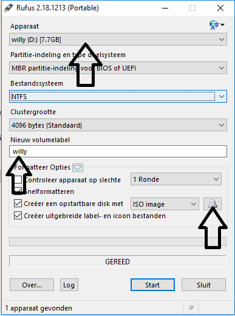
-
Choose the correct Device from the ‘Apparaat’ list.
-
Give the USB a new volume label
-
Select the Clonezill ISO
-
Start
7. Step 2; Creating Image
Select the USB as first boot device in the BIOS.

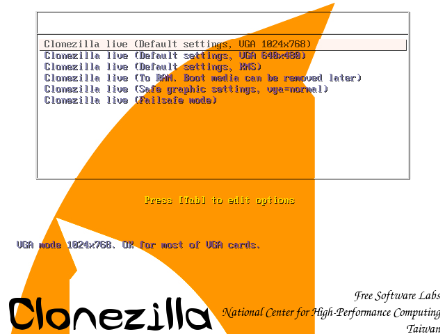

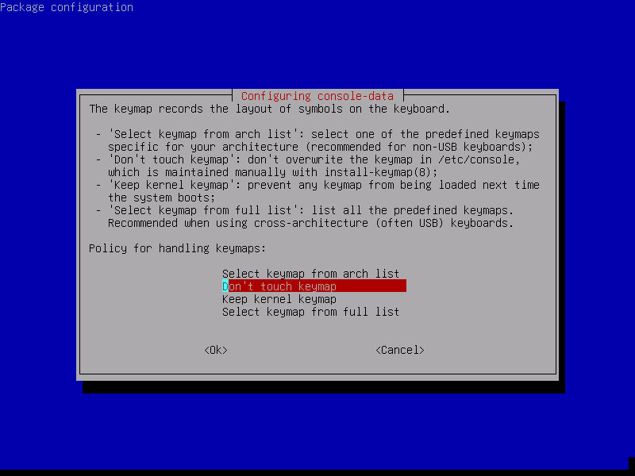
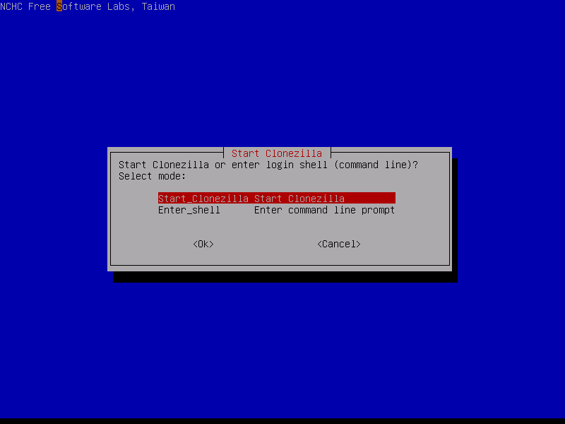
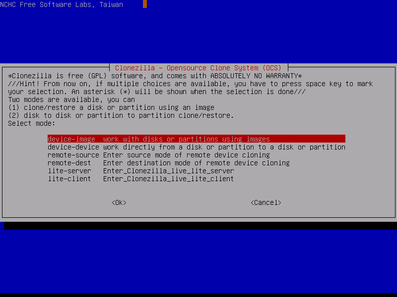
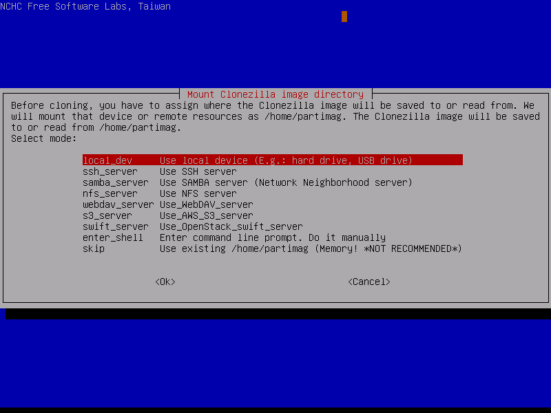


Press Ctrl-C when the USB stick is in the list
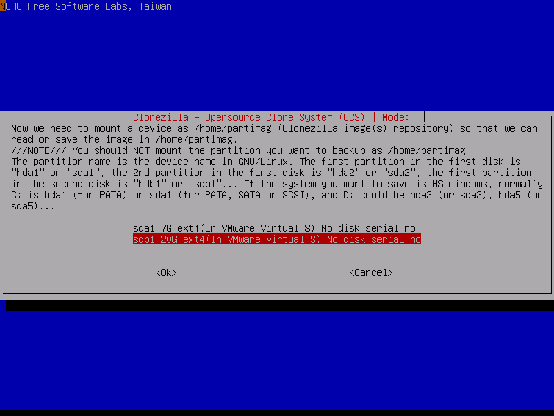
Select the USB where you want the image to be stored

*Select the directory where the image will be stored, if this must be
the root of the USB. Done can directly be selected by using the TAB
key.
*


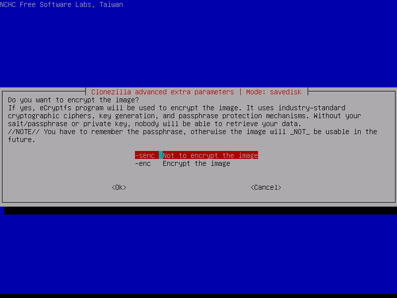


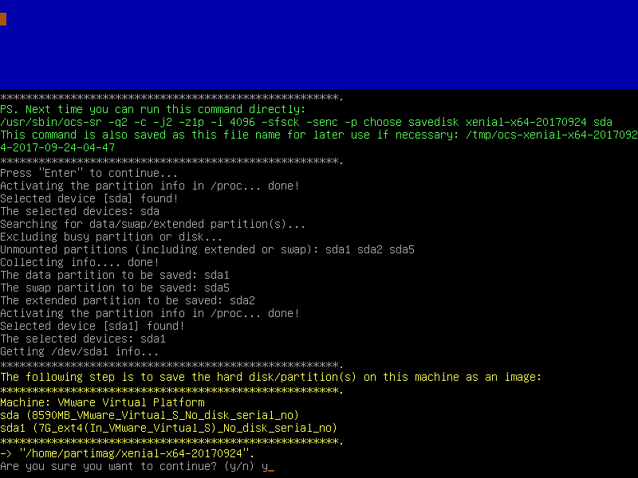
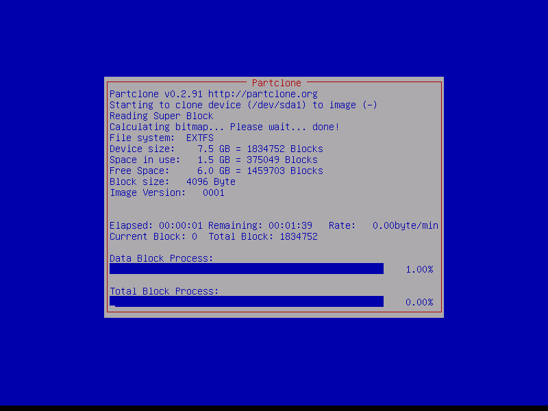
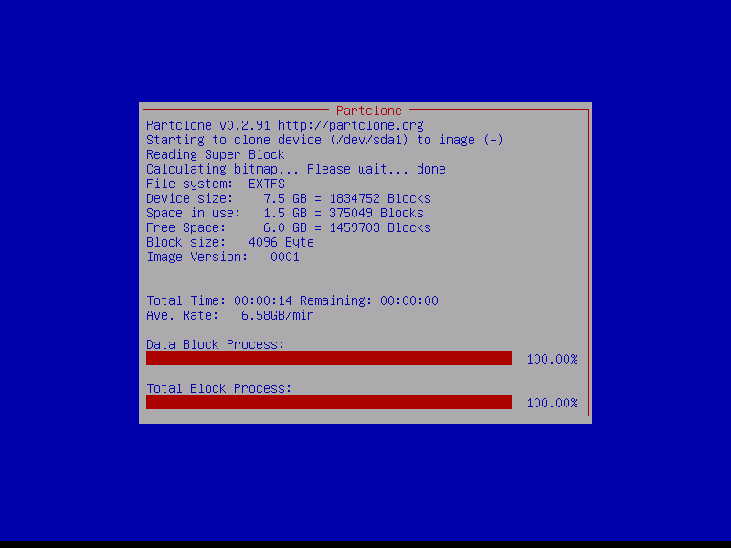
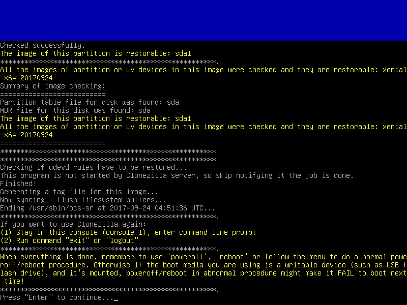

8. Step 3; Restoring Image
Select the USB as first boot device in the BIOS.
Press Ctrl-C when the USB stick is in the list
Select the USB where the image is located
Select the directory where the image is stored


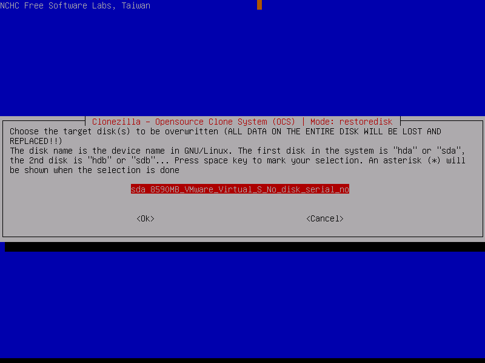
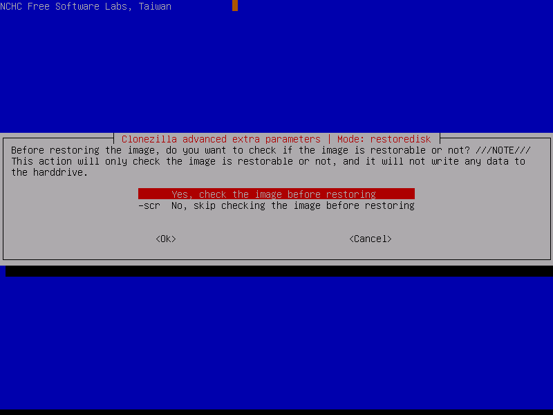
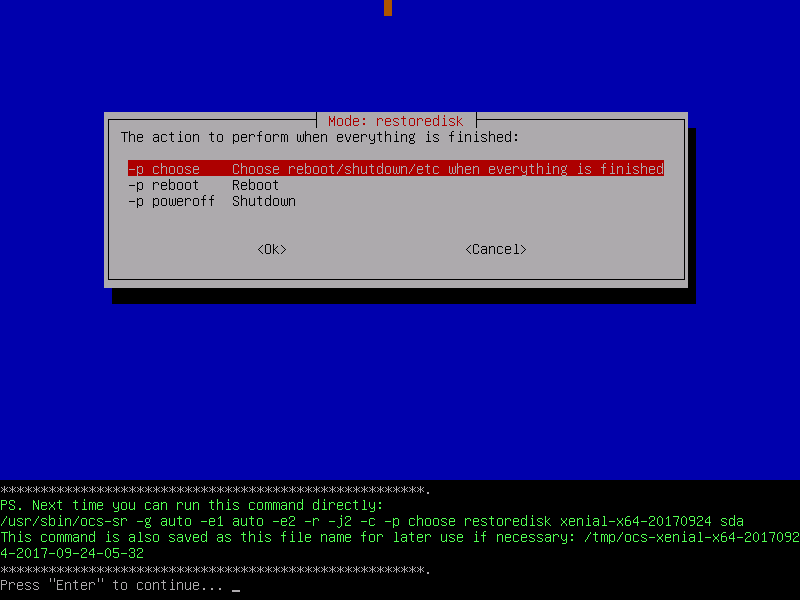

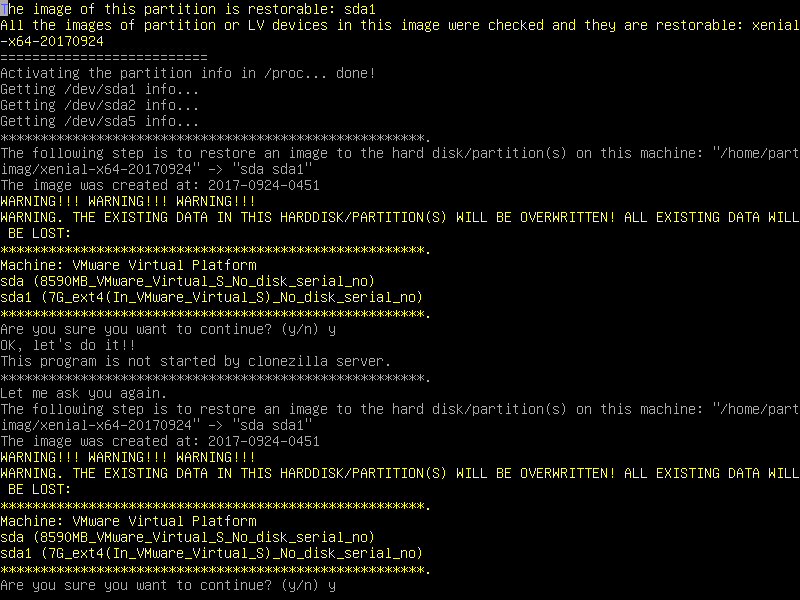


9. References
-
how-to-convert-a-remote-physical-linux-server-to-a-virtual-machine-vmware-virtualbox-instructions. (2017, Januari 12). Retrieved from joe0.com:
-
(n.d.). Retrieved from http://www.remastersys.org/Using-disk-imaging-software-in-data-backup-and-recovery.
-
(n.d.). Retrieved from searchdatabackup.techtarget.com: http://searchdatabackup.techtarget.com/tip/Using-disk-imaging-software-in-data-backup-and-recovery